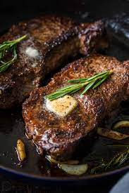

Steak

Description
This delicious protein rich steak would leave you wanting more.
Ingredients
- Your favourite cut of steak
- My preference would be Ribeye
- Salt and Black Pepper
- Butter
- 2 Garlic Cloves
- Thyme
Steps
- Prepare your steak to be room temperatured atleast 30 mins prior to cooking
- Dry your Ribeye steak with kitchen tissue
- Massage your steak with olive oil
- Season your steak with salt and black pepper
- Let your steak rest for 30 mins in room temperature
- Take a non stick frying pan
- Use a brush to lightly apply olive oil on the pan
- Heat the pan over a medium-high heat
- Slowly place your ribeye using tongs in the pan
- Fry it for 5-6 minutes on each side